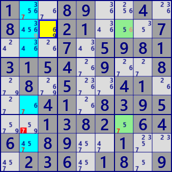
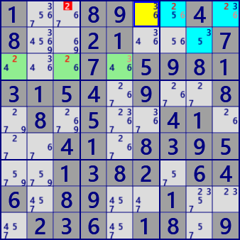
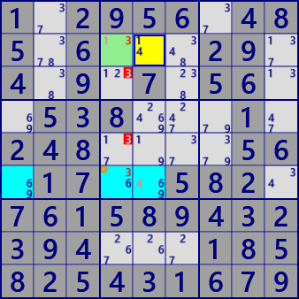
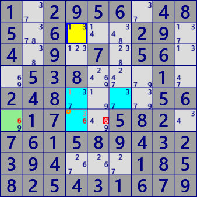

ALS DeathBlossom(基本形)
ALS Death Blossom(発展形)DeathBlossom...アルゴリズム考察(v5)
DeathBlossomは、妖しげな名前をもつ、ALSの配置に基づく解析アルゴリズムです。
DeathBlossomのイメージを示します。
1つのセル(軸セル:StemCell)がn個の候補数字（x,y,w)を持ち、そのそれぞれの数字がn個のALSと強いリンク(セルとALS間のRCC)で繋がっているとします。
また、n個のALSにはRCCとは異なる共通の数字zがあるとします。このとき、ALS内の全てのzをカバーするzがALS外にあれば、zは除外できます。
zが真とすると、全てのALSはLockedSetになり、軸セルの候補数字がなくなります。
ALSは重なりなしの場合(左図)と、重なりを許容する場合(右上下)があります。

ALS DeathBlossomの例です。
1..89..4. 8..21...7 ...7.5981 3154.9..8 .8.5..41. ..41.8395 ..1382.64 6.89..1.. .236.18.9 Puzzle
1..89..4. 8..21...7 ...7.5981 3154.9..8 .8.5..41. ..41.8395 ..1382.64 6.89..1.. .236.18.9 Current

ALS Death Blossom
Stem cell: r2c3 #69
-#6-ALS1 : r27c7 #567
-#9-ALS2 : r12368c2 #345679
eliminated : r7c2 #7
1..89..4. 8..21...7 ...7.5981 3154.9..8 .8.5..41. ..41.8395 ..1382.64 6.89..1.. .236.18.9 Puzzle
1..89..4. 8..21...7 ...7.5981 3154.9..8 .8.5..41. ..41.8395 ..1382.64 6.89..1.. .236.18.9 Current

ALS Death Blossom
Stem cell: r1c6 #36
-#3-ALS1 : r3c135 #2346
-#6-ALS2 : r1c79 r2c8 #2356
eliminated : r1c3 #2
1.2956.48 5.6...29. 4.9.7.56. .538...1. 248....56 .17..582. 761589432 394...185 825431679 Puzzle
1.2956.48 5.6...29. 4.9.7.56. .538...1. 248....56 .17..582. 761589432 394...185 825431679 Current

ALS Death Blossom [overlap]
Stem cell: r2c5 #14
-#1-ALS1 : r26c4 #136
-#4-ALS2 : r6c145 #3469
eliminated : r35c4 #3
1.2956.48 5.6...29. 4.9.7.56. .538...1. 248....56 .17..582. 761589432 394...185 825431679 Puzzle
1.2956.48 5.6...29. 4.9.7.56. .538...1. 248....56 .17..582. 761589432 394...185 825431679 Current

ALS Death Blossom [overlap]
Stem cell: r2c4 #13
-#3-ALS1 : r6c14 #369
-#1-ALS2 : r5c46 r6c4 #1367
eliminated : r6c5 #6